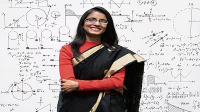

Neena gupta:
Neena Gupta (born 24 November 1984[1]) is a professor at the Statistics and Mathematics Unit of the
Indian Statistical Institute (ISI), Kolkata.[2] Her primary fields of interest are commutative algebra
and affine algebraic geometry.
Education
Gupta graduated with honours in mathematics from Bethune College in 2006. She earned her post graduation in
mathematics from the Indian Statistical Institute in 2008[9] and subsequently, her Ph.D. degree in 2011 with
commutative algebra as her specialization under the guidance of Amartya Kumar Dutta. The title of her dissertation
was "Some results on Laurent polynomial fibrations and Quasi A*-algebras".
he 2024 Infosys Science Foundation Prize in Mathematical Sciences category is the latest in a series of accolade
that Neena Gupta of the Indian Statistical Institute (ISI), Kolkata has received for her significant work in mathematics.
Introducing the awardee and her work, the following prize citation1 was read out by the Jury Chair Chandrashekhar Khare:
Prof. Neena Gupta’s work has had a big impact in the field of algebraic geometry, particularly through her solution to
the long-standing Zariski Cancellation Problem. Her work answers a very basic question which can be informally described
as: if two geometric objects have the same structure after adding a dimension to them, can one deduce that they are in
fact the same? In her breakthrough work she showed that, in positive characteristic, contrary to what one might expect,
the answer is in the negative. Thus, the innocuous looking move of adding a dimension can destroy information.
